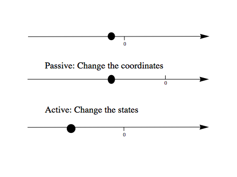

Quantum Mechanics Beginners¶
Fundamental Concepts¶
What’re the most important tricks in QM calculations?¶
Remember what basis we are working in
Identity
First Three Postulates¶
Physical state is described by kets in a Hilbert space. We need to specify a complete basis {\(\ket{i}\)} to do calculations.
\[\ket{\psi} = \sum_i \ket{i}\bra{i}\ket{\psi} = \sum_i C_i \ket{i}\]Operators are given by Hermitian operators; A measurement of the variable \(\hat \Omega\) will yield one of the eigenvalues \(\omega\) with the probability
\[\left|\braket{\omega}{\psi}\right|^2 .\]And the state of the system will change to \(\ket{\omega}\).
The state vector obeys the Schrödinger equation,
\[i\hbar \frac{\d}{\d t}\ket{\psi(t)} = \hat H \ket{\psi(t)} ,\]where \(\hat H\) is the Hamiltonian operator.
Comments
The logic here is that we first find the way to describe a system, then think about how to find out the information we need from the state vector and also find the evolution of the state vector. Then we need the operator and Schrodinger equation. Finally, we would like to relate the theory to experiments, and it comes the measurement postulate.
Later we will need the relation between position and momentum, which becomes the fourth postulate.
How to solve the evolution of a system? We just define a magical operator, propagator
\[\hat U \ket{\psi(t_0)} = \ket{\psi(t)} .\]This operator just gives us the evolution of state vector! Wait, can we write down the explicit expression of it?
Let’s find out. The only thing we know about the evolution of a state vector is the third postulate up there.
\[\begin{split}i\hbar \frac{\d }{\d t}\ket{\psi(t)} & = \hat H \ket{\psi(t)} \\ i\hbar \frac{\d }{\d t}\hat U \ket{\psi(t_0)} & = \hat H \hat U \ket{\psi(t_0)} \\ i\hbar \frac{\d }{\d t}\hat U & = \hat H \hat U\end{split}\]Looks familiar? This just gives us a exponential result, if the Hamiltonian is time independent.
\[\hat U = e^{- i \hat H (t-t_0)/\hbar}\]We can prove that this operator is Unitary because \(\hat H\) is Hermitian.
This is just the abstract representation, we work in some basis, and the most convenient basis is the eigenstates of Hamiltonian, { \(\ket{\epsilon_i}\) },
\[\begin{split}\hat U \ket{\phi} & = e^{- i \hat H (t-t_0)/\hbar} \ket{\psi} \\ \hat U \ket{\phi} & = \sum_i e^{- i \hat H (t-t_0)/\hbar} \ket{\epsilon_i}\bra{\epsilon_i} \ket{\psi} \\ \hat U \ket{\phi} & = \sum_i e^{- i \epsilon_i (t-t_0)/\hbar} \ket{\epsilon_i}\bra{\epsilon_i} \ket{\psi}\end{split}\]And we are going to use
\[\hat U = \sum_i e^{- i \epsilon_i (t-t_0)/\hbar} \ket{\epsilon_i}\bra{\epsilon_i}\]from now on. (Well, only on discrete eigenvalues ones.)
(See that? Identity does the work again.)
Position and Momentum Space¶
Summary
- Position
Define {\(\ket{x}\)} basis.
Define \(\hat x\) operator.
Find wave function in this basis.
Find measurement.
- Evolution
Need propagator \(\hat U\).
Propagator needs the solution of Hamiltonian eigensystem.
(Free particles) Hamiltonian needs the solution of momentum eigensystem.
- Momentum
Before we define some arbitrary momentum space, we should check the relation between momentum and position. And it turns out to be related by a commutator.(Postulate IV)
Use the postulate to momentum operator.
Find eigenstates.
(Calculate the propagator.)
Position Space¶
Define \(\ket{x}\) basis.
Orthonormal condition is
\[\braket{x}{x'}=\delta(x-x').\]Completeness condition is
\[\int \braket{x'}{x'} \d x' = \mathbb{I}\]Define position operator.
The position operator is defined as
\[\hat x \ket{x} = x \ket{x}\]And in \(\{\ket{x}\}\) basis, this operator becomes a function, which is
\[\begin{split}&\bra{x}\hat x \ket{x'} \\ =& \left(\bra{x}\hat x \right)\ket{x'} \\ =& x \braket{x}{x'} \\ =& x \delta(x-x')\end{split}\]Find state vector in \(\{\ket{x}\}\) basis.
\[\psi(t,x) = \braket{x}{\psi(t)}\]Normalized
\[\int \left| \psi(t,x) \right|^2 \d x = 1.\]And we are interpreting \(\left| \psi(t, x)\right|^2\) as probability density.
Calculate probability of a measurement. Taking \(\hat x\) as an example.
\[\begin{split}&\bra{\psi} \hat x \ket{\psi} \\ &= \iint \braket{\psi}{x}\bra{x} \hat x \ket{x'} \braket{x'}{\psi} \d x \d x' \\ &= \iint \psi^ * (t,x) x\delta(x-x') \psi(t,x') \d x \d x' \\ &= \int \left| \psi(t,x) \right|^2 x \d x\end{split}\]
Momentum Space¶
To find the momentum operator, we need to check the relation between momentum and position before we just randomly define one. Truth is, we have a fourth postulate states the relation between them.
Postulate IV¶
The commutator of \(\hat x\), \(\hat p\) is
- Two comments:
Why i ? Eigenvalue of Anti-Hermitian operator.
Why \(\hbar\)? Because people define the dimensions of position and momentum differently before they know this commutator. We would like to assign them the same dimension if we already know this relation.
Momentum Space¶
Find momentum operator in position basis {\(\ket{x}\)}.
\[\bra{x} \left[ \hat x, \hat p\right] \ket{x'} = i\hbar \delta(x-x')\]And write out the commutator and use the relation of delta function \(x\delta'(x) = -\delta(x)\), we find out the momentum operator in {\(\ket{x}\)} basis,
\[\bra{x}\hat p \ket{x'} = -i\hbar \frac{\d }{\d t} \delta(x-x')\]Let’s talk physics. What does that operator mean? We need to see what the result is when momentum operator is applied to a state. And remember we would work in {\(\ket{x}\)} basis.
\[\begin{split}&\bra{x} \hat p \ket{\psi} \\ & = \iint \braket{x}{x'} \bra{x'} \hat p \ket{x''}\braket{x''}{\psi} \d x' \d x'' \\ & = \int \bra{x}\hat p \ket{x''}\psi(t,x'') \d x'' \\ & = \int \left( -i\hbar \frac{\d}{\d x} \delta(x-x') \psi(t,x') \right) \d x' \\ & = \int \left( -i\hbar \frac{\d}{\d x'} \delta(x'-x) \psi(t,x') \right) \d x'\end{split}\]Integrate by parts, we will find the expression. (I am having a problem finding the right answer.)
\[\bra{x} \hat p \ket{\psi} = - i\hbar \frac{\d }{\d x}\psi(x) .\]Eigenfunction for momentum.
\[\hat p \ket{p} = p \ket{p} .\]Again, we are going to project it on the {\(\ket{x}\)} basis,
\[\bra{x}\hat p\ket{p} = \bra{x} p \ket{p} ,\]where \(\braket{x}{p}\) is the eigenstates in {\(\ket{x}\)} basis, we call it \(\phi_p(x)\).
\[\begin{split}\bra{x}\hat p\ket{p} & = p \phi_p(x) \\ \int \bra{x}\hat p \ket{x'}\braket{x'}{p}\d x' & = p \phi_p(x) \\ -i\hbar \frac{\d }{\d x} \phi_p(x) & = p \phi_p(x)\end{split}\]The solution is
\[\phi_p(x) = \mathrm{C} e^{i p x/\hbar}\]This constant C is found by the normalization condition,
\[\braket{p}{p'}=\int \phi_p^*(x)\phi_{p'}(x)\d x = \delta(p-p')\]The final results should be
\[\phi_p(x)=\frac{1}{\sqrt{2\pi \hbar}} \exp{(i p x/\hbar)}\]Find the dynamics of free particles in quantum mechanics. Find the propagator and everything solves. The hamiltonian for a free particle is
\[\hat H = \frac{\hat p^2}{2m} .\]We argue here that the eigenvectors of momentum are also the eigenvectors of this hamiltonian. And we can easily guess the eigenvalues are \(p^2/2m\). So the propagator is
\[\hat U = \int e^{-i p^2 t/2m\hbar} \ket{p}\bra{p} \d p\]But that is too abstract to use, we can find the expression in {\(\ket{x}\)} basis.
\[\begin{split}\bra{x}\hat U\ket{x} & = \int e^{-i p^2 t/2 m \hbar} \braket{x}{p}\braket{p}{x} \d p \\ & = \int e^{-i p^2 t/2 m \hbar} \left| \phi_p \right|^2 \d p\end{split}\]
Quantum in 1D¶
General¶
Always start with the propagator for time independent Hamiltonian.
For cases that Hamiltonian with discrete eigenvalues,
If the initial state is just one of the eigenstates of Hamiltonian, say the mth one (normalized),
Well, that phase factor doesn’t have any effect for the topic we discuss. So our time evolution will stay on the same state forever.
The same thing happens for continuous cases.
So our task is simplified to solve the eigensystem of Hamiltonian, which is
Infinite Barriers¶
Math¶
Setup¶
Potential in a box
\[\begin{split}V(x) = & 0, 0< x <L \\ & \infty, \text{Other}\end{split}\]
Solve the Problem¶
Hamiltonian
\[\hat H = \frac{\hat p ^2}{2 m } + V(x)\]Dynamic equation
\[\hat H \ket{\psi(t)} = \epsilon \ket{\psi(t)}\]We are happy to work in {\(\ket{x})\)} basis,
\[\bra{x} \hat H \ket{\psi(t)} = \bra{x} \epsilon \ket{\psi(t)} .\]Put the Hamiltonian in, and remember that in position basis
\[\bra{x} \hat p \ket{\psi} = - i \hbar\frac{\d}{\d x} \psi ,\]the equation of motion becomes
\[- \frac{\hbar ^2}{2 m} \frac{\d^2}{\d x^2} \psi(x,t) + V(x) \psi(x,t) = \epsilon \psi(x,t)\]Boundary conditions
\[ \begin{align}\begin{aligned}\psi _ I(0,t) = \psi _ {II}(0,t)\\\psi _ {II}(L, t) = \psi _ {III}(L, t)\end{aligned}\end{align} \]Guess the Solutions
\[\psi_{II} = \psi = C \sin (k x) + D \cos(kx)\]Find the wavenumber k, by putting the assumed solutions into equation of motion
\[k = \pm \sqrt{\frac{2m \epsilon}{\hbar^2} }\]Since we can always merge the negative into the constants, it is fine to use
\[k = \sqrt{\frac{2m \epsilon}{\hbar^2} }\]Use Boundary Condition 1. At x=0,
\[\psi(0,t)=0 .\]This gives us \(D = 0\) .
At \(x=L\),
\[\psi(L,t)=0 .\]This leads to
\[k L = n \pi .\]Since \(n=0\) gives us a 0 wave function, we would just drop \(n=0\). For the same reason why we drop the negative values of k, we would drop all the negative values of n. This BC gives us the possible values of energy because wavenumber k is related to energy,
\[\epsilon = \frac{\hbar^2}{2m L^2 } (n\pi)^2 ,\]with
\[n=1,2,3, \cdots\]
Normalization as the last constraint for the last undetermined parameter,
\[C=\sqrt{\frac{2}{L}}\]
Physics¶
Estimation
Find the expression for energy using dimensional analysis.
Using uncertainty relation to estimate the expression for energy.
Comments
Why is the solution quantized? 1. Too many constraints. BCs + normalization.
- Why do the n in the solution goes into the expression for energy?
Have a look at the kinetic energy term, the derivative does it.
- What’s so weird?
For \(n=2\), no particles found at \(x=L/2\). And so on.
Some General Properties¶
1D bound states have no degeneracy. Prove it by assume that there is a degeneracy state.
1D bound states’ wave function can be chosen to be real. (if potential V is real.)
Parity¶
Passive and Active Transformations¶
Generally, there are two ways of interpreting a transformation.
Here in QM, passive means transform the operator \(\hat \Omega\), while active means change the state \(\ket{\psi}\). Suppose we have a system \(\ket{\psi}\), an operator \(\hat \Omega\), a transformation \(\hat U\).
Transformation \(\hat U \ket{\psi}\) is identical to \(\hat U^\dagger \hat \Omega \hat U\) because they give the same observation results. The first one is called active, while the second one is called passive.
Parity¶
Definition¶
Properties¶
Act on momentum eigenvectors,
\[\hat \Pi \ket{p} = \ket{-p} .\]
Physics: Parity changes the coordinate, so the direction of momentum is also changed.
Math:
\[\hat \Pi \ket{p} = \int \hat \Pi \ket{x}\braket{x}{p}\d x= \int \ket{-x}\braket{x}{p}\d x\]Change coordinate from x to -x,
\[\hat \Pi \ket{p} = \int \ket{x}\braket{-x}{p}\d x = \int \ket{x}\braket{x}{-p}\d x = \ket{-p}\]
Hermitian,
\[\bra{x}\hat \Pi \ket{x'} = \delta(x+x') (\bra{x'}\hat \Pi \ket{x})^\dagger = \bra{x}\hat \Pi^\dagger \ket{x'} =\delta(x+x')\]Unitary
\[\bra{x}\hat \Pi^\dagger \hat \Pi \ket{x'}= \braket{-x}{-x'}=\delta(-x+x')=\delta(x-x')=\braket{x}{x'}\]Inverse of parity
\[\hat \Pi \hat \Pi = \hat \Pi \hat \Pi^\dagger = \hat I\]Eigensystem of parity.
\[\hat \Pi \ket{\pi}=\pi\ket{\pi}\]Apply another operator
\[\hat \Pi^2 \ket{\pi} = \pi^2 \ket{\pi}\]So, * Eigenvalues: 1, -1; * Eigenvactors: Even function, Odd function
Parity applied to operators a. Apply to position operator,
\[\hat \Pi^\dagger \hat X \hat \Pi = -\hat X\]Proof:
\[\bra{x}\hat \Pi ^\dagger \hat X \hat \Pi \ket{x'} = \bra{-x}\hat X \ket{-x'}= -x'\delta(x-x') = \bra{x}(-\hat X)\ket{x'}\]Apply to momentum operator,
\[\hat \Pi^\dagger \hat p \hat \Pi = -\hat p\]Proof: Similar to the previous one, just change x basis to momentum basis.
Symmetry related to Hamiltonian.
\[\left[ \hat \Pi , \hat H \right] = 0\]When this happens, parity of Hamiltonian won’t change the wave function. Or the wave function should have an specific parity for 1D problem.
Classical Limit of QM¶
Ehrenfest’s Theorem¶
Schrödinger equation and its adjoint
For any observable \(\hat \Omega\),
This is called Ehrenfest’s Theorem.
Simple Example of Ehrenfest’s Theorem¶
Suppose we have a system with Hamiltonian
We need to figure some commutators first.
Position average
\[\begin{split}\frac{\d }{\d t} \left< \hat x \right> & = \frac{1}{i\hbar} \bra{\psi(t)} \left[ \hat x, \hat H \right]\ket{\psi(t)} \\ & = \frac{\left< \hat p \right>}{m}\end{split}\]We are familiar with this in classical mechanics.
Momentum average
\[\begin{split}\frac{\d}{\d t} \left<\hat p\right> & = \frac{1}{i\hbar} \bra{\psi(t)} \left[\hat p, \hat H\right] \ket{\psi(t)} \\ & = \frac{1}{i\hbar} \bra{\psi(t)} (-i\hbar V'(\hat x)) \ket{\psi(t)} \\ & = -\left< V'(\hat x) \right>\end{split}\]In classical mechanics, the derivative of potential is force. And the result is just like Newton’s 2n Law except the right hand side is not exactly like a force which should be \(-\frac{\d}{\d x} \left< V(\hat x) \right>\).
What does \(-\left< V'(\hat x)\right>\) mean¶
Suppose the potential area is fairly small and distributed around some coordinate \(x_0=\left< \hat x \right>\), we can do Taylor expansion around \(x_0\).
If the uncertainty is small enough, every term except the first one becomes small. So to the lowest order, average of potential is approximately the potential at \(x_0\).
Similarly, the average of first derivative of potential \(<V'(\hat x)>\) is approximately \(V'(x_0)\).
These gives us a hint for the previous result we got for the time evolution of average momentum. The result reduces to classical mechanics one as long as we keep the lowest order of Taylor expansion. Those higher order terms show the quantum effect.
Picture¶
We can see deeper into Ehrenfest’s Theorem through Heisenberg Picture of quantum mechanics.
Schrödinger & Heisenberg Pictures¶
Pictures are the ways we look at the evolution of systems.
Schrödinger Picture¶
In Schrödinger picture the states are evolving with time.
And for time independent Hamiltonian,
Heisenberg Picture¶
In Heisenberg Picture, the states do not change with time.
and of course the initial is the same with Schrödinger Picture,
How do we relate to Heisenberg Picture to Schrödinger Picture? Through investigation of observables. We should have the same observation results in both Pictures.
So the operators change with time in Heisenberg Picture.
Ehrenfest’s Theorem in Heisenberg Picture¶
This can be easily proved by throwing every definition need in to it. We also need the following equations.
And REMEMBER that propagator commute with time independent Hamiltonian, so
So this Ehrenfest’s Theorem can also be written as
We can define
which is the time derivative of operator in Heisenberg Picture.
Reminder: The time derivative of an observable (average) depends not only the time derivative of itself, but also the commutator of the observable and Hamiltonian.
Example of Ehrenfest’s Theorem in Heisenberg Picture¶
We will show why it is better to work in Heisenberg Picture to show the meanings of Ehrenfest’s Theorem.
Suppose we have a Hamiltonian in Heisenberg Picture,
Time derivative of position operator
Time derivative of momentum operator
So the operator in Heisenberg Picture just have a sense of the physical quantities in classical mechanics. That’s why we like it.
Conservation¶
We say a observable is conserved if the corresponding operator commutes with Hamiltonian,
1. Energy Hamiltonian always commutes with itself.
If Hamiltonian is time independent, then energy is conserved. (If Hamiltonian is tide dependent, energy is not conserved. This is kind of obvious in classical mechanics.)
What is the nature of time dependence¶
We can see this by looking at a simple example.
Assume we have a system with energy eigenstates \(\ket{\epsilon _ n}\), and initially,
So
We can calculate the expectation value of some operator \(\hat \Omega\),
If \(\ket{\epsilon _ n}\) are also the eigenvectors of \(\hat \Omega\), then
And the expectation value
The important thing is that the time dependence of this expectation value actually arise from this term
As it is so important, we call
Bohr frequency.
Harmonic Oscillators¶
Why Harmonic Oscillators¶
Many systems can reduce to it. Use Taylor expansion for the potential and redefine parameters we will find harmonic oscillators in the potential.
Hamiltonian for 1D is
Standard Solution¶
We can use polynomial expansion for part of the solution.
Dimension Schrodinger Equation¶
First step is always finding out the characteristic length scale and characteristic energy scale. Assume we have an characteristic length \(\eta\) and characteristic energy scale \(\epsilon_0\). Through uncertainty principle we know only for dimensional analysis
Kinetic energy and potential energy have the same dimension
so we have
with \(\omega^2=k/m\). A dimensional analysis shows that \(\epsilon_0=\hbar\omega\).
Now we can define dimensionless variables,
The time independent Schrodinger equation in position basis is
Using those characteristic scales, we can rewrite this equation into a dimensionless one, which is
in which \(\psi'=\frac{\mathrm d}{\mathrm dz}\psi\).
Take Limits¶
We need to look at the behavior of the solutions before we can guess a proper general solution.
\(z\rightarrow \infty\), we have \(\psi''-z^2\psi=0\). Solution to this equation is \(\psi(z)~ e^{-z^2/2}\).
The solution of the the equation should be in the form
Insert this to time independent Schrodinger equation, we can get the equation of \(u(z)\).
Polynomial Method¶
The simplest form of \(u(z)\) is polynomial,
Put this back to equation of u, we can get the recursion relation,
If \(u_0\) and \(u_1\) are given, we can get the whole polynomial.
Notice that we have definite parity here. So \(u _ 1\) branch vanish because they are even.
\(u_0\) is set by the normalization condition.
Terminate The Series¶
The series blow up if it doesn’t terminate. So we need to terminate the series using the following relation,
Then we have the energy levels, which is \(e=n+1/2\).
Complete Series¶
By picking proper normalization factor, we can write down the energy levels and corresponding wave functions. In fact, this polynomial can be found in mathematical phyisics books.
Tricky Solution¶
Find out the characteristic length and energy
One way to get the intrinsic length without writing down the dimensions of each quantity is to use the following relation
Or if we are given the Hamiltonian in terms of \(k\),
Rewrite the Hamiltonian
Now we can define \(\hat a^\dagger \hat a = \hat N\), which is just like an operator for (energy) quanta numbers.
An impoertan relation is
The eigen equation for this weird energy quanta number operator is
To find out the eigen state of \(\hat a\) and \(\hat a^\dagger\), we try this,
This means \(\hat a \ket{n}\) and \(\hat a^\dagger \ket{n}\) are also eigen states of \(\hat N\).
The next step is very crucial. Since \(\hat a \ket{n}\) and \(\hat a^\dagger \ket{n}\) are eigen states of \(\hat N\), we know that
Then our next step is to find out what are \(C1\) and \(C2\) exactly.
They way of finding them is to use invariant quantities, such as the inner product. Here we use average of \(\hat N\) operator.
Final step is to constrain on \(n\), which should be integrals. This is true because we need a cut off for the eigen equation of \(\hat N\), whose avarage is n and it should be non negative.
leads to \(n\ge 0\). To get this proper cut off, \(n\) should be integer because if it’s not, according to
n can go to negative numbers. If n is positive integer,
show an cut off at 0.
We can even find out the wave functions of these \(\ket{n}\) by finding the ground state first and apply \(\hat a^\dagger\) to the ground state.
Ground state in \({\ket{x}}\) basis can be found by solving the differential equation,
Very important:
The Hermitian conjugate of \(\hat a \ket{n}\) is \(\bra{n} \hat a^\dagger\).
Hermitian conjugate of \(\hat a \hat a^\dagger\) is \(\hat a \hat a^dagger\). This can be a trap. Hermitian conjugate is the complex conjugate AND TRANSPOSE!
Semiclassical¶
Classical¶
In phase space, the trajectory of phase space points ( {\(x/\eta\) and \(p/(\hbar/\eta)\)} ) is on a circle of radius \(x_{max}/\eta\).
Quantum semiclassical¶
Key points:
What is the trajectory of \(\left<\hat x/\eta\right>\) and \(\left<\hat p/(\hbar/\eta)\right>\)
Can we make the trajectory just like the classical case by choosing some special conditions?
What do these special cases mean?
Expectation value of creation and annihilation operators
Apply Ehrenfest theorem to annihilation operator,
Excellent. Now we can solve out \(\avg{\hat a(t)}\), which is
Take the hermitian conjugate,
Expectation value of position and momentum
With these two operators, we can find out the average of \(\hat x\) and \(\hat p\) because
we have
We can have a look at these two averages,
It is obvious that the average reduces to classical case if \(\alpha_0 = \alpha_0^*\). But this is too strong for a semiclassical limit.
Coherent state
Coherent state is the eigenstate of creation operator. Its wave package has the smallest spread allowed by quantum mechanics.
The most special part about coherent state is that the system stays on coherent state if it start with coherent state.
Take the hermitian conjugate,
At \(t=0\), we have
That is to say, energy should be
Initially, we also have
This means
Coherent state expanded using energy eigenstates
(This result)
(To Be Finished…)